This site is very useful for students those who studying engineering. See the latest in the tech world news and latest projects and full view of pcb design.
This site is very useful for students those who studying engineering. See the latest in the tech world news and latest projects and full view of pcb design.
Printed circuit board (PCB) design brings your electronic circuits to life in the physical form. Using layout software, the PCB design process combines component placement and routing to define electrical connectivity on a manufactured circuit board.
PCB refers to the circuit board, while PCBA refers to the circuit board plug-in assembly, SMT process. One is a finished board and the other is a bare board.PCB(Printed Circuit Board)，Made of epoxy glass resin material, it is divided into 4, 6 and 8 layers according to the number of signal layers.
Most useful and common CAD software for PCB designing is EAGLE. EAGLE stands for Easily Applicable Graphical Layout Editor.Here i give some of pcb design softwares as overview.
1.PCBWeb DesignerPCBWeb is a free CAD application for designing and manufacturing electronics hardware. Design multi-sheet schematics with our fast and easy-to-use wiring tool. Route multi-layer boards with support for copper pours and DRC checking. Integrated Digi-Key Parts Catalog with Bill of Materials Manager.
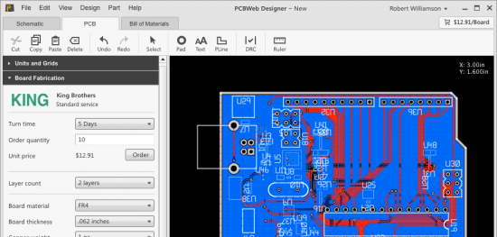Is an excellent pcb layout design software tool to create professional printed circuit board ( PCB ). It is a flexible easy to use CAD program, which allow you to realize your projects in a short time. With ZenitPCB Layout is possible to create the project starting both from the schematic capture or by the layout itself.
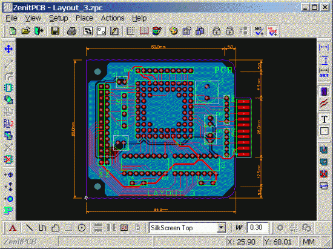Is a program to help you draw circuit diagrams. It comes complete with symbol libraries to get you started straight away. As well as being able to simply print your designs, you can use TinyCAD to publish your drawings by copying and pasting into a Word document or saving as a PNG bitmap for the web.
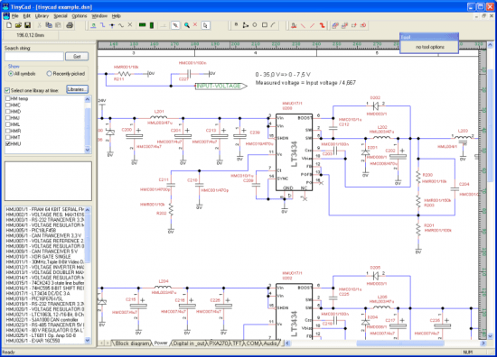Is a flexible tool for designing printed circuit boards. It runs on Macintosh. Its many features include: virtually unlimited board sizes, number of board layers, number of parts, support for both through-hole and surface mount parts and more.
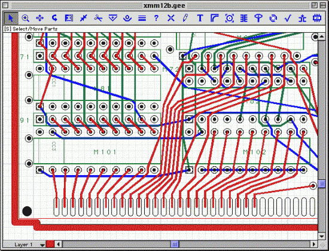Is a schematic capture program for Windows. The name “BSch” is an abbreviation of “Basic Schematic”. It has only basic functions, in order to simplify operation.
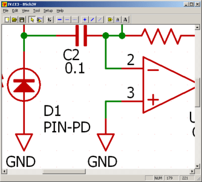Is a snap to learn and use. Laying out PCBs is easy, even for the first time user.
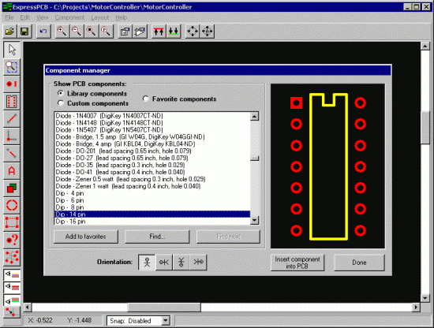Is an open source (GPL) software for the creation of electronic schematic diagrams and printed circuit board artwork. It is useful for everybody working in electronic design (schematic diagrams and Printed Board up to 16 layers).
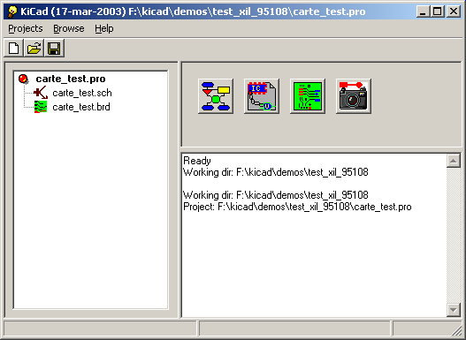Runs on Linux and has produced tools which are used for electrical circuit design, schematic capture, simulation, prototyping, and production. Currently, the gEDA project offers a mature suite of free software applications for electronics design, including schematic capture, attribute management, bill of materials (BOM) generation, netlisting into over 20 netlist formats, analog and digital simulation, and printed circuit board (PCB) design layout.
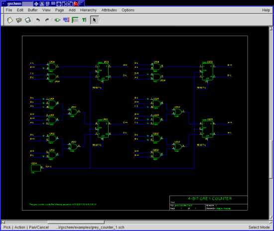Fritzing software is an interesting open-source initiative to support designers, artists, researchers and hobbyists to work creatively with interactive electronics and develop electronic projects. Fritzing helps you learn more about electronic circuits, to document your projects and even let’s you prepare them for production.
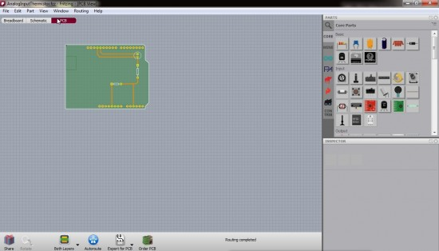DesignSpark PCB is the world’s most accessible electronics design software. Easy to easy to learn and easy to use, it is designed to significantly reduce your concept-to-production time. At the core of this unique approach is a powerful software engine that enables you to capture Schematics, design PCB boards and layouts.
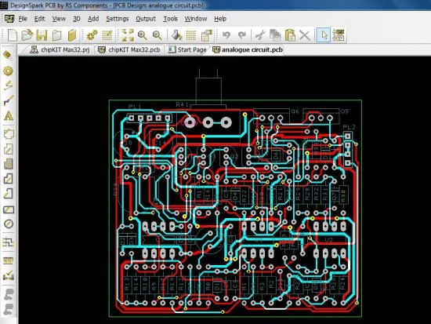EasyEDA is a free, zero-install, Web and cloud-based EDA tool suite, integrating powerful schematic capture, mixed-mode circuit simulation and PCB layout in a seamless cross-platform browser environment, for electronic engineers, educators, students and hobbyists.
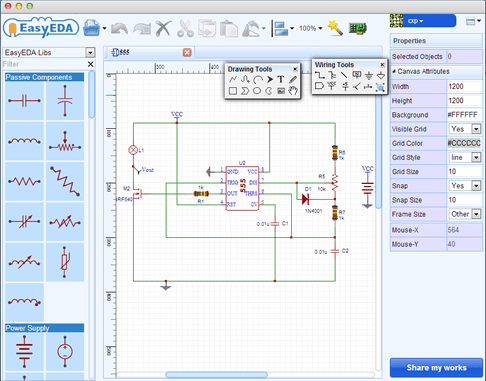Subscribe to Blog via EmailEnter your email address to subscribe to this blog and receive notifications of new posts by email.Join 6 other subscribers.